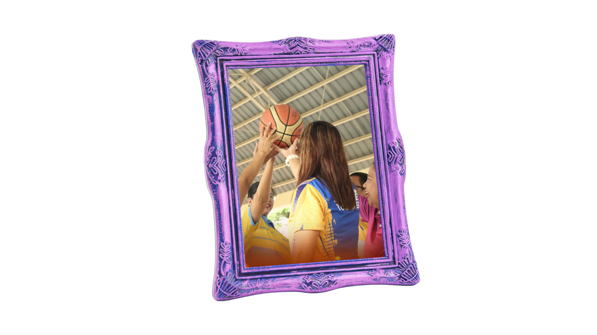
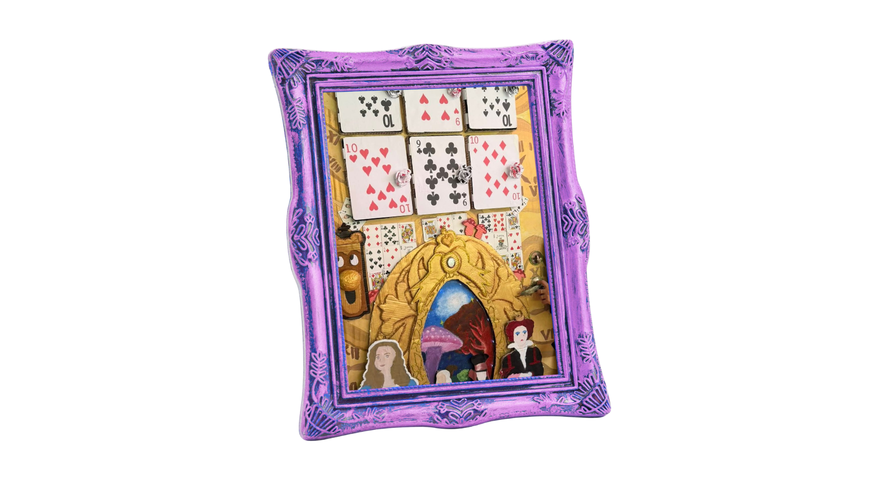
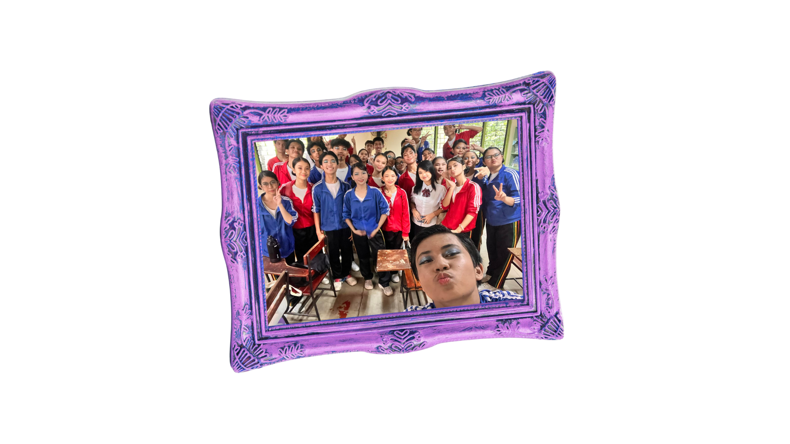
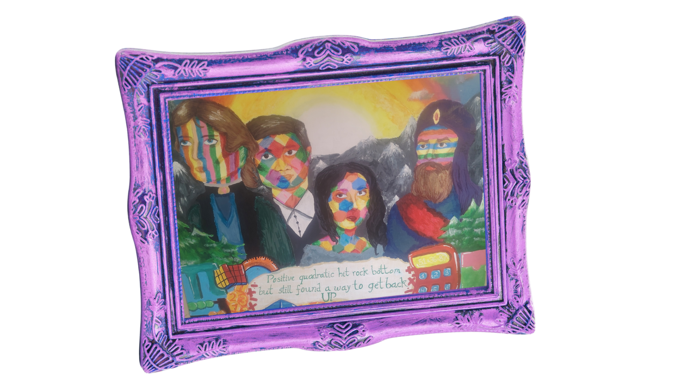

Listen to music while reading ^^

Cluster Meet
Cluster Meet was exceptionally special to me, as it was my first time joining such a big event. I got to become closer with my classmates, seniors, and push my limits more than ever. I was in the Athletics meet, so I had to run while also play javelin. I competed in athletics in Intrams, so I got 3rd! But I was quite sad about javelin, as I trained really hard, because it was a new sport for me to try, yet I didn't even get to compete because it was only for divisionals. Overall though, it was a great experience, I would love to do it again!

English Month
My highlight for English Month was the book corner. It was the first time English month did this event, as it was usually just Booklandia or a reading comprehension. I remembered the combined stress, hardwork, and spilling of paint with my classmates! I'm so glad we won, as we put so much effort into creating the book cover. But even if we didn't, I learned many new crafts like making paper rose and how to make a door knob from scratch! It got the class to become resourceful and creative, and I got to use my imagination to its fullest.

Values Month
Without a doubt, values month is the most stressful but memorable month. With big events like Vpop and MVP, it made us cry both tears of joy and stress. We wanted to redeem ourselves in Vpop, as we were 2nd place in Grade 8. I wanna give a shoutout to Nina and Maeur, for their hardwork and combined efforts to make such a beautiful choreo with meaningful lyrics. I'm glad we got to express the meaning of our song, as we had a new concept with chairs as choreography. I'm proud to say we did earn our place as 1st, symbolizing a united front. MVP was also so memorable, as we were the reigning champs. I was so proud of Grace and Martin, as they also deserved their trophies.

Math Month
Math month was definitely surprising this time. Usually, it had simple competitions like Sudoku and chess, so I was so shocked with the amount of events this year! It was overwhelming, as the year 2026 just started. I joined the Math mural, and even though we didn't win, I was glad to again use my talent and skills in art to create a meaningful piece. I'm glad I got to refine my abilities even more, as I learned new techniques in painting and in drawing. Even though it was stressful, atleast I had my friends along with the journey.